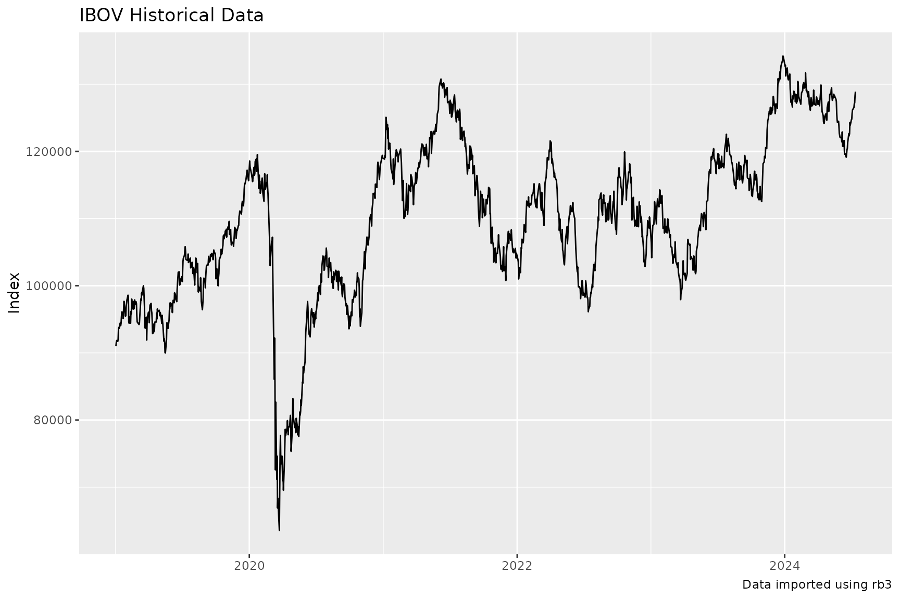
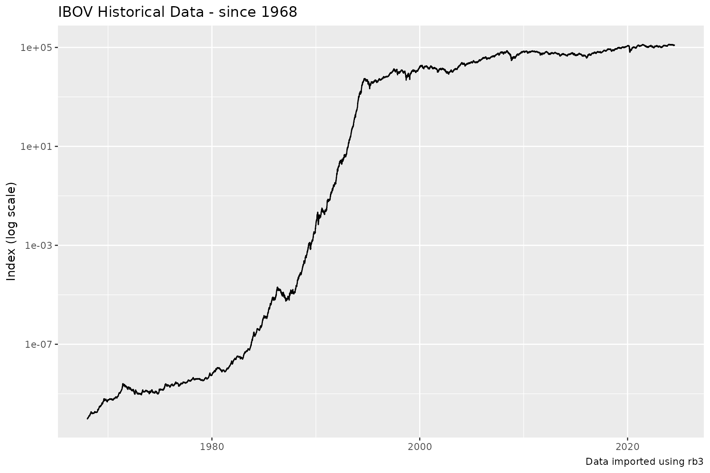

rb3 comes with a diverse range of functions to explore the index delivered by the B3 Exchange. These functions will be presented here.
B3 Indexes
The function rb3::indexes_get list the names of available indexes.
indexes_get()
#> [1] "AGFS" "BDRX" "GPTW" "IBOV" "IBRA" "IBXL" "IBXX" "ICO2" "ICON" "IDIV"
#> [11] "IEEX" "IFIL" "IFIX" "IFNC" "IGCT" "IGCX" "IGNM" "IMAT" "IMOB" "INDX"
#> [21] "ISEE" "ITAG" "IVBX" "MLCX" "SMLL" "UTIL"Indexes Composition and Weights
The compositon of B3 indexes are available throught the function rb3::index_weights_get. This function returns a data.frame with the current compostion of the requested index, all symbols that compound the index, their weights and theoretical position. Here the IBOVESPA (IBOV) Index has its compositon listed.
index_weights_get("IBOV")
#> # A tibble: 92 × 3
#> symbol weight position
#> <chr> <dbl> <dbl>
#> 1 ABEV3 0.0325 4386652506
#> 2 ALPA4 0.00202 202765994
#> 3 AMER3 0.00443 596086291
#> 4 ARZZ3 0.00268 60358029
#> 5 ASAI3 0.0072 795949801
#> 6 AZUL4 0.00253 327646296
#> 7 B3SA3 0.0357 5901731302
#> 8 BBAS3 0.0289 1420731069
#> 9 BBDC3 0.0115 1508883586
#> 10 BBDC4 0.0477 5156077326
#> # … with 82 more rowsThe IBr100 Index (IBXX)
index_weights_get("IBXX")
#> # A tibble: 100 × 3
#> symbol weight position
#> <chr> <dbl> <dbl>
#> 1 ABEV3 0.0311 4386652506
#> 2 ALPA4 0.00193 202765994
#> 3 AMBP3 0.00057 43853759
#> 4 AMER3 0.00424 596086291
#> 5 ARZZ3 0.00257 60358029
#> 6 ASAI3 0.00689 795949801
#> 7 AURE3 0.00207 301966318
#> 8 AZUL4 0.00242 327646296
#> 9 B3SA3 0.0342 5901731302
#> 10 BBAS3 0.0277 1420731069
#> # … with 90 more rowsThe Small Caps Index (SMLL)
index_weights_get("SMLL")
#> # A tibble: 134 × 3
#> symbol weight position
#> <chr> <dbl> <dbl>
#> 1 AALR3 0.00281 42288232
#> 2 ABCB4 0.00449 67449065
#> 3 AERI3 0.00173 227070796
#> 4 AESB3 0.0106 324190156
#> 5 AGRO3 0.0049 51771532
#> 6 ALSO3 0.00737 122470927
#> 7 ALUP11 0.0132 140050337
#> 8 AMAR3 0.00129 154147193
#> 9 AMBP3 0.00413 43853759
#> 10 ANIM3 0.00478 272558877
#> # … with 124 more rowsIndex Composition
rb3::index_comp_get returns a vector with symbols that compound the given index.
index_comp_get("SMLL")
#> [1] "AALR3" "ABCB4" "AERI3" "AESB3" "AGRO3" "ALSO3" "ALUP11" "AMAR3"
#> [9] "AMBP3" "ANIM3" "ARML3" "ARZZ3" "AZUL4" "BEEF3" "BKBR3" "BLAU3"
#> [17] "BMOB3" "BOAS3" "BPAN4" "BRAP3" "BRAP4" "BRML3" "BRPR3" "BRSR6"
#> [25] "CAML3" "CASH3" "CBAV3" "CEAB3" "CLSA3" "COGN3" "CSMG3" "CURY3"
#> [33] "CVCB3" "CYRE3" "DESK3" "DIRR3" "DMMO3" "DXCO3" "ECOR3" "EMBR3"
#> [41] "ENAT3" "ENBR3" "ENJU3" "ESPA3" "EVEN3" "EZTC3" "FESA4" "FHER3"
#> [49] "FLRY3" "GETT11" "GFSA3" "GGPS3" "GMAT3" "GOAU4" "GOLL4" "GRND3"
#> [57] "GUAR3" "HBOR3" "HBSA3" "IFCM3" "IGTI11" "INTB3" "IRBR3" "JALL3"
#> [65] "JHSF3" "KEPL3" "LAVV3" "LEVE3" "LIGT3" "LJQQ3" "LOGG3" "LOGN3"
#> [73] "LWSA3" "MATD3" "MDIA3" "MEAL3" "MEGA3" "MILS3" "MLAS3" "MODL11"
#> [81] "MOVI3" "MRFG3" "MRVE3" "MTRE3" "MYPK3" "NGRD3" "ODPV3" "ONCO3"
#> [89] "OPCT3" "ORVR3" "PARD3" "PCAR3" "PETZ3" "PGMN3" "PNVL3" "POMO4"
#> [97] "POSI3" "PTBL3" "QUAL3" "RANI3" "RAPT4" "RCSL3" "RECV3" "ROMI3"
#> [105] "RRRP3" "SAPR11" "SBFG3" "SEER3" "SEQL3" "SIMH3" "SLCE3" "SMFT3"
#> [113] "SOMA3" "SQIA3" "STBP3" "SULA11" "SYNE3" "TASA4" "TECN3" "TEND3"
#> [121] "TGMA3" "TRAD3" "TRIS3" "TTEN3" "TUPY3" "UNIP6" "USIM3" "USIM5"
#> [129] "VIIA3" "VIVA3" "VLID3" "VULC3" "WIZS3" "YDUQ3"Index by Segment
rb3::index_by_segment_get returns a data.frame with all stocks that are in the index, their economic segment, weights, position and segment weight in the index.
index_by_segment_get("IBOV")
#> # A tibble: 92 × 6
#> symbol segment weight segme…¹ posit…² refdate
#> <chr> <chr> <dbl> <dbl> <dbl> <date>
#> 1 WEGE3 Bens Indls / Máqs e Equips 0.0215 0.0215 1.48e9 2022-09-20
#> 2 EMBR3 Bens Indls / Mat Transporte 0.0047 0.0047 7.35e8 2022-09-20
#> 3 AZUL4 Bens Indls/Transporte 0.00276 0.0234 3.28e8 2022-09-20
#> 4 CCRO3 Bens Indls/Transporte 0.00731 0.0234 1.12e9 2022-09-20
#> 5 ECOR3 Bens Indls/Transporte 0.0009 0.0234 3.34e8 2022-09-20
#> 6 GOLL4 Bens Indls/Transporte 0.00097 0.0234 1.90e8 2022-09-20
#> 7 RAIL3 Bens Indls/Transporte 0.0114 0.0234 1.22e9 2022-09-20
#> 8 POSI3 Comput e Equips 0.00045 0.00045 7.36e7 2022-09-20
#> 9 BRFS3 Cons N Básico / Alimentos Process… 0.00757 0.0279 1.08e9 2022-09-20
#> 10 JBSS3 Cons N Básico / Alimentos Process… 0.0149 0.0279 1.13e9 2022-09-20
#> # … with 82 more rows, and abbreviated variable names ¹segment_weight,
#> # ²positionIndexes Time Series
rb3 downloads data from B3 website to build time series for B3 indexes.
The function rb3::index_get downloads data from B3 for the given index name and returns data structured in a data.frame. The index names are obtained with rb3::indexes_get function.
index_name <- "IBOV"
index_data <- index_get(index_name, as.Date("2019-01-01"))
head(index_data)
#> # A tibble: 6 × 3
#> refdate index_name value
#> <date> <chr> <dbl>
#> 1 2019-01-02 IBOV 91012.
#> 2 2019-01-03 IBOV 91564.
#> 3 2019-01-04 IBOV 91841.
#> 4 2019-01-07 IBOV 91699.
#> 5 2019-01-08 IBOV 92032.
#> 6 2019-01-09 IBOV 93613.The returned data.frame has three columns: refdate, index_name and value.
index_data |>
ggplot(aes(x = refdate, y = value)) +
geom_line() +
labs(
x = NULL, y = "Index",
title = str_glue("{index_name} Historical Data"),
caption = str_glue("Data imported using rb3")
)
The IBOVESPA index starts at 1968 and the series is adjusted for all economic events the that affected the brazilian currency in the 80-90’s decades.
index_data <- index_get(index_name, as.Date("1968-01-01"))
index_data |>
ggplot(aes(x = refdate, y = value)) +
geom_line() +
scale_y_log10() +
labs(
x = NULL, y = "Index (log scale)",
title = str_glue("{index_name} Historical Data - since 1968"),
caption = str_glue("Data imported using rb3")
)
The y-axis was transformed to log scale in order to get the visualization improved.
Change index_name to get data for other indexes, for example, the Small Caps Index SMLL.
index_name <- "SMLL"
index_data <- index_get(index_name, as.Date("2010-01-01"))
index_data |>
ggplot(aes(x = refdate, y = value)) +
geom_line() +
labs(
x = NULL, y = "Index",
title = str_glue("{index_name} Historical Data"),
caption = str_glue("Data imported using rb3")
)
Indexes Last Update
rb3::indexes_last_update returns the date where the indexes have been last updated.
indexes_last_update()
#> [1] "2022-09-20"